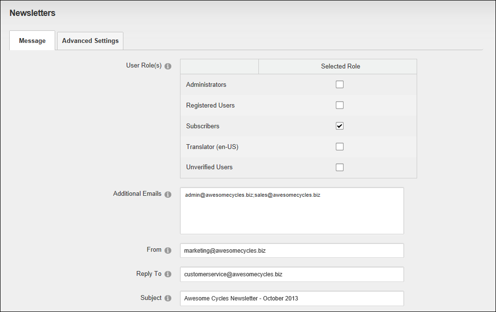
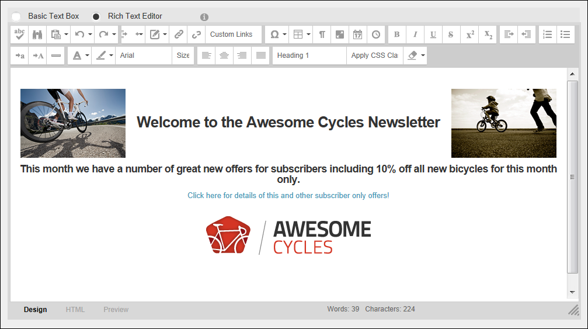
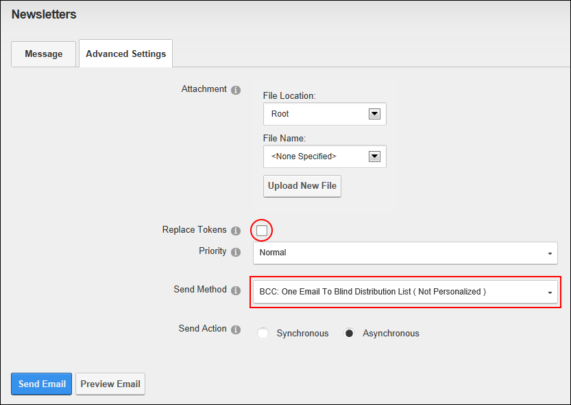
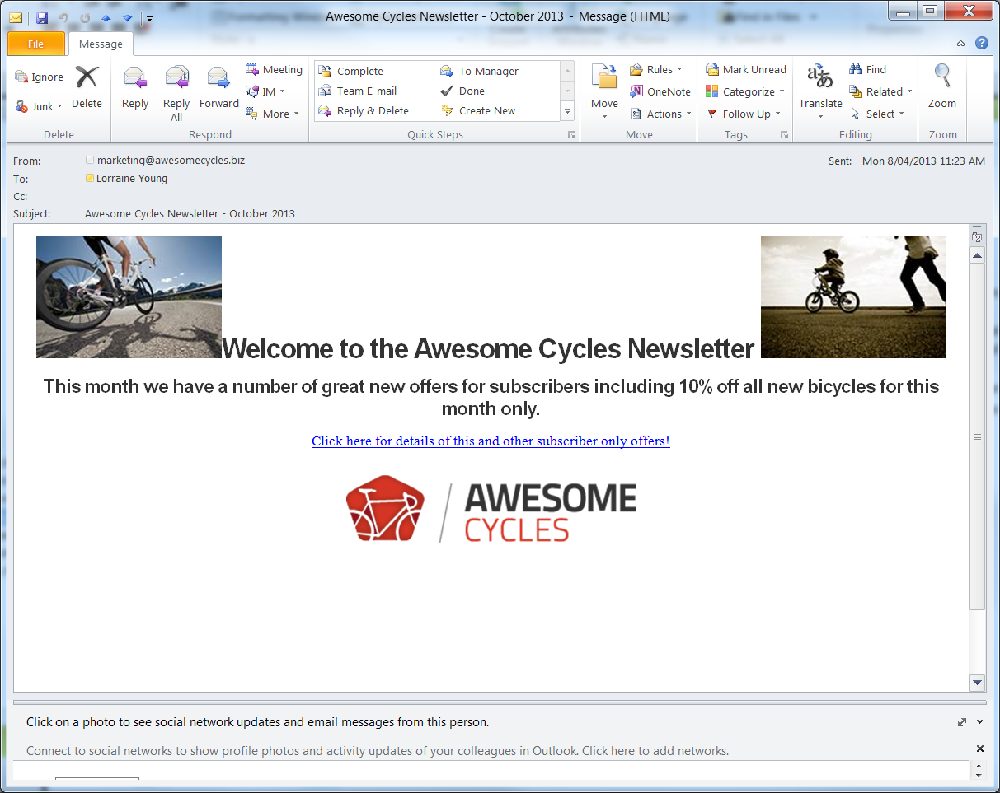

Sending a Basic Newsletter
How to send a newsletter without replacement tokens or personalization using the Newsletters module.
- Navigate to Admin > Advanced Settings >
 Newsletters - OR - Go to a Newsletters module.
Newsletters - OR - Go to a Newsletters module.
- Select the Message tab.
- Complete one or both of these address fields:
- At User Role(s), beside each role which will receive the newsletter. Note: Users in multiple roles will only receive one copy of the newsletter.
- In the Additional Emails text box, enter each of the email addresses to receive the newsletter separated by a semi-colon ( ; ). E.g. admin@awesomecycles.biz;sales@awesomecycles.biz
- Optional. In the From text box, enter/modify the email address to be displayed in the From field of this newsletter. If you are logged in to the site, the email address associated with your user account is displayed here by default.
- Optional. In the Reply To text box, enter the reply to email address for the email.
- In the Subject text box, enter a subject title for the email.

- At Editor, select Basic Text Box to send a plain text email - OR - Select Rich Text Editor to send an HTML email with formatting and images).
- In the Editor text box, enter the body of the newsletter.
- Optional. Click the Preview Email button located at the base of the module to preview the newsletter before sending it.

- Select the Advanced Settings tab and then set these required settings:
- At Replace Tokens?, .
- At Send Method, select BCC: One Email To Blind Distribution List ( Not Personalized ).

- Set any of these Optional Advanced Settings:
- At Attachment, select the required attachment. See "Setting a File Link" or See "Uploading and Linking to a File".
- At Priority, select the priority of the email (High, Normal, or Low) from the drop down list. The default setting is Normal.
- At Send Action, select from the following options:
- Synchronous: Emails are all sent before your page refreshes. This method is suitable for small mail outs of approximately 100 or less.
- Asynchronous: This starts a separate thread (user process) to send emails. This method is suitable for large mail outs of approximately 100 or more. This is the default option.
- Click the Send Email button. Successful or Not Successful message is displayed once the message is sent. For messages sent Synchronously, the message displays once all emails have been sent. For messages sent Asynchronously, the message displays when the send action has successfully commenced. See "Newsletter Error Messages"

The Newsletter in the recipient's mailbox